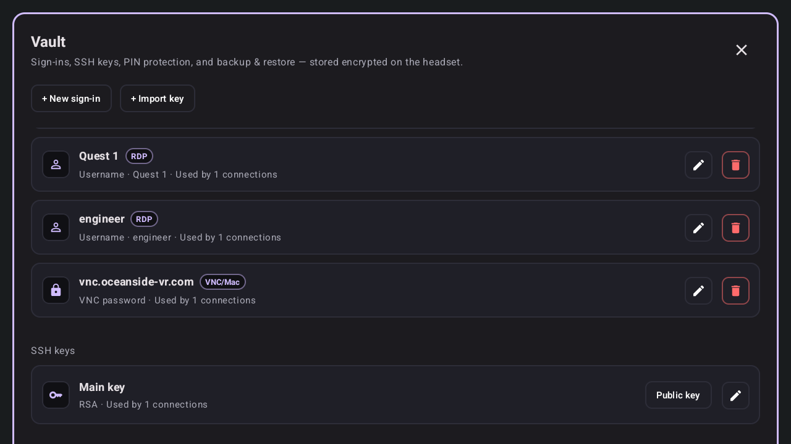
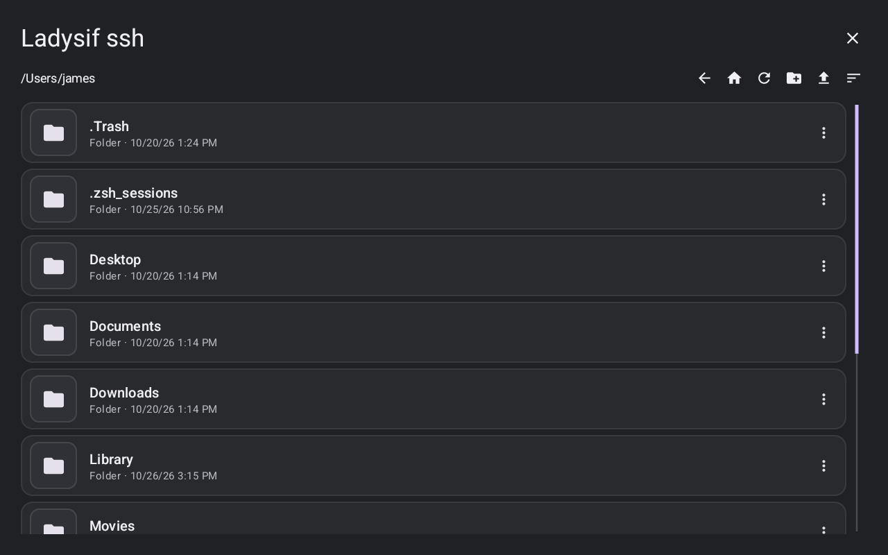
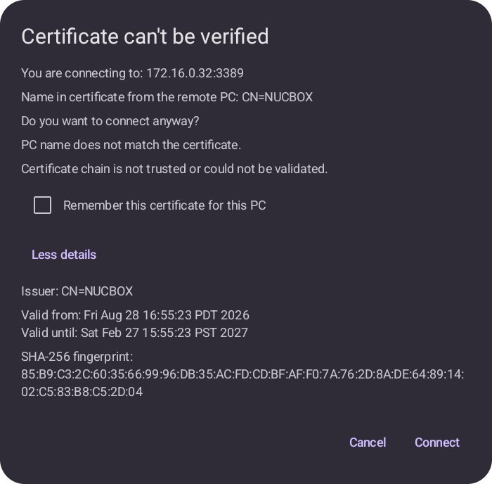

Credentials & files
Sign-ins, SSH keys, PIN protection, and backup & restore — stored encrypted on the headset.
The Vault
Open the Vault from the launcher, or from Info → Vault. It holds:
- Sign-ins — with New sign-in, Edit, and Delete; each shows how many connections use it
- SSH keys — with Import key, Edit, and Delete; each shows its public key, which you can copy
A saved sign-in is used whole — a connection never borrows just its username or password. A sign-in made for one connection only is stored on that connection instead. When editing a connection with a saved password, leaving the field blank keeps the saved password.

Setting up a sign-in
Password sign-in
Enter a display name, username, and password. For a Mac account, enter the macOS full name and short name. A VNC-password sign-in has no username. Turn on Require PIN for that entry if you want it PIN-gated.
SSH key sign-in
Enter a display name, paste the private key, and add a passphrase if the key has one. Leaving the key blank on edit keeps the saved key. Turn on Require PIN for that key if you want it PIN-gated.
How sign-ins match connections
- Blank-username entries match VNC-password connections only
- Mac (short-name) entries match SSH or Mac-user VNC connections
- Other entries match non-VNC connections
PIN protection, backup & restore
At the bottom of the Vault you can set, change, or remove an app PIN, or use the headset/system PIN instead. The app PIN is 4–12 digits and is cached for five minutes.
Edits and deletes of PIN-gated items, and PIN-gated file access, prompt for the PIN. If no app PIN exists and the system PIN is not in use, turning on Require PIN first prompts you to set one.
Backup & restore exports or restores a backup file protected by a passphrase.
Storage, in plain terms: Android Keystore with AES/GCM encryption. Passwords, SSH private keys, passphrases, proxy passwords, and Cloudflare parameters are stored encrypted.

Files over SFTP
Open Files from the launcher (when you have an SSH connection with file access enabled), from the SSH toolbar, or from a VNC toolbar with a paired SSH connection.
- Browse with Back, Home, Refresh, Upload, and Sort by name or date
- Per file or folder: Download, Download folder, Rename, Delete (with a confirm dialog)
- Transfers show progress and can be cancelled
- Downloads go to the headset Downloads folder; uploads pick a headset folder or file
- File access is PIN-gated when the underlying sign-in or key requires it
Pairing, in short: SSH uses its own SFTP toggle; VNC pairs with an SSH connection that has SFTP enabled. RDP has no SFTP pairing.
About, and trust prompts
Info → About shows the version, OceanSideVR, open source licenses, an ADB tunnel section, and Debug Actions: clear trusted certificates, revoke granted permissions, clear SSH host keys, show or hide Connection Info, and clear Cloudflare logins.
When connecting, you may see:
- RDP certificate — “Certificate unverified” or “Certificate changed,” with target, subject, issuer, validity, and fingerprint, plus Remember certificate and Connect anyway
- SSH host key — a host-key prompt before first connection to a host
- Cloudflare tunnel — a status dialog with Cancel (which closes the connection) while the tunnel is starting
